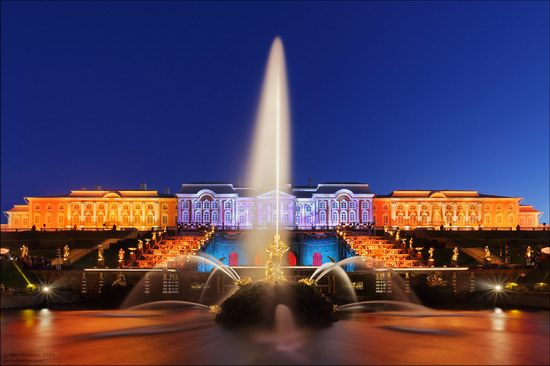
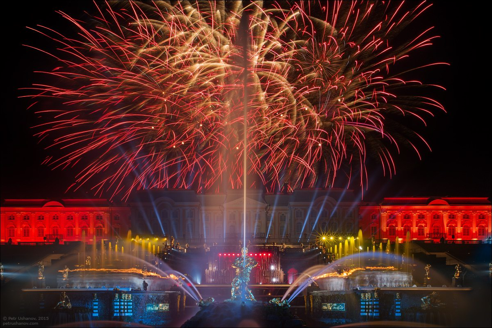
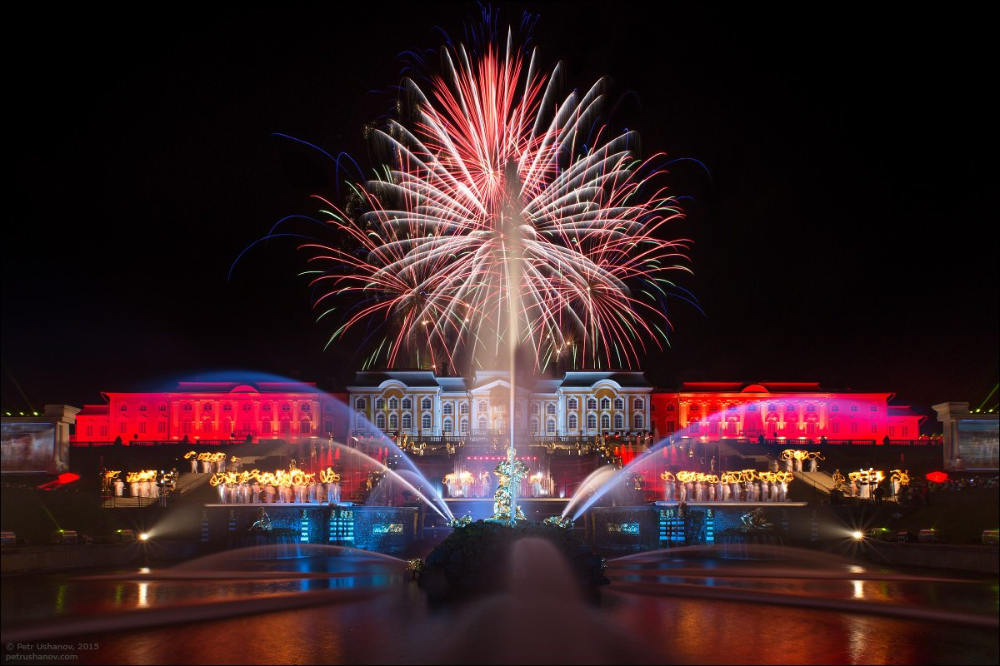
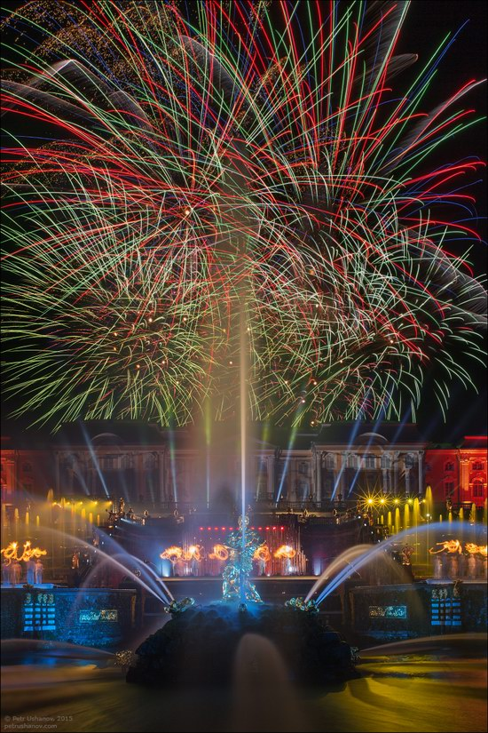
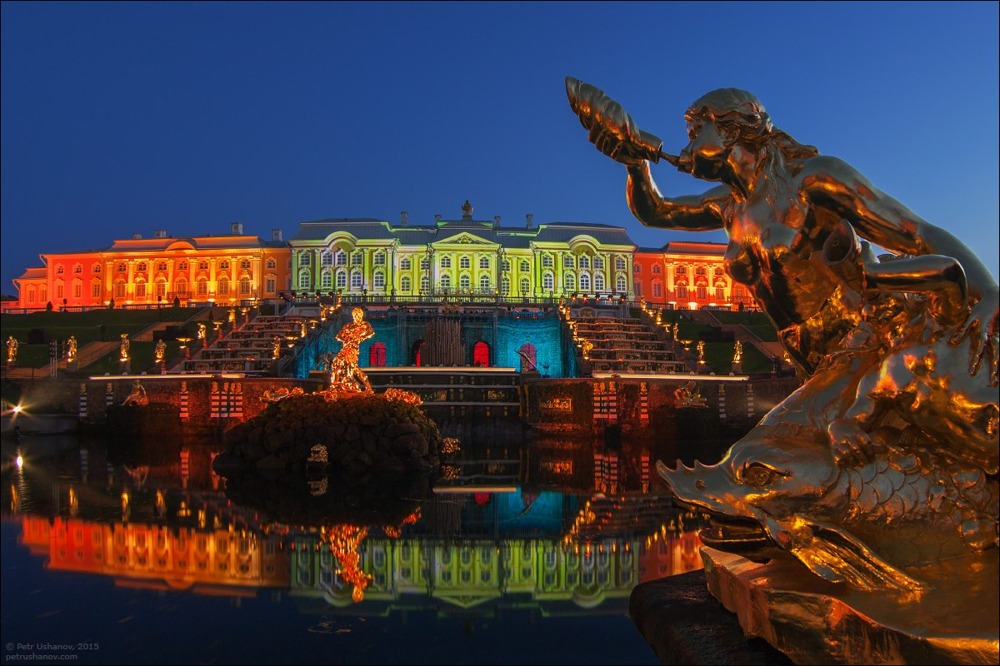
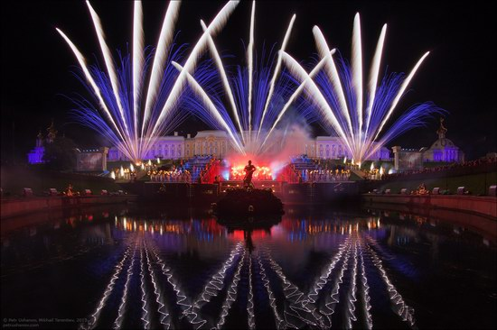
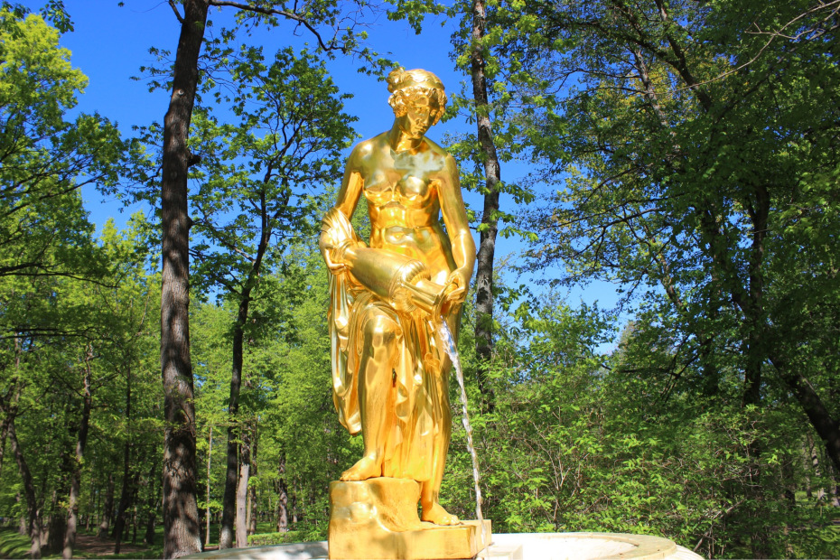

Peterhof Fountains and Gardens
Everyone can attend this show after shopping for a price tag at the ticket workplace of the museum reserve. Also, this provider is supplied by several journey businesses in St. Petersburg.
Peterhof is a palace and park complex located at the southern shore of the Gulf of Finland. The fountain “Samson tearing the lion’s mouth” is the primary element of the cascade.
The Peterhof Fountain Season starts with a marvelous rite outside the awe-inspiring palace, marking the winter coming to a stop and St. Petersburg coming returned to lifestyles. It affords a lovable sight to enjoy whilst taking walks across the Tsarist palaces of Peter the Great.

Peterhof Fountains and Gardens





